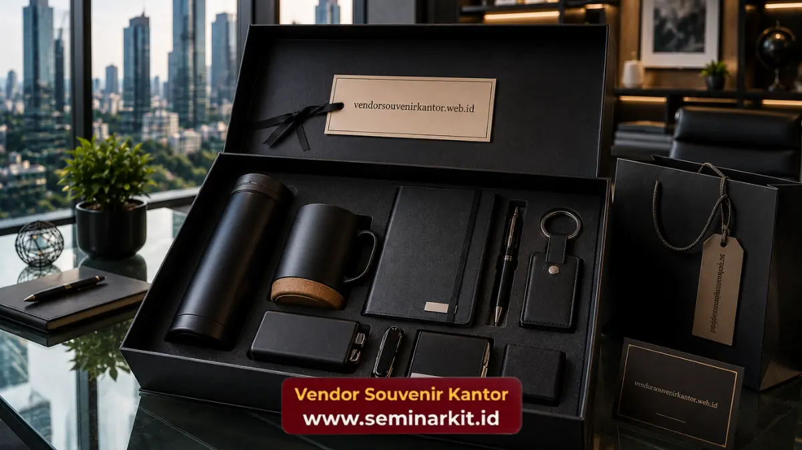

Souvenir kantor custom logo perusahaan adalah produk souvenir yang dicetak, disablon, dibordir, atau diukir dengan identitas visual perusahaan seperti nama, logo, atau tagline.
Produk ini digunakan sebagai media branding yang efektif karena hadir dalam bentuk barang fungsional yang digunakan berulang oleh penerimanya.
Semakin sering barang tersebut digunakan, semakin besar pula eksposur identitas merek perusahaan kepada lingkungan sekitar penerima.
- Souvenir custom logo berfungsi sebagai media branding berjalan yang memperluas eksposur identitas perusahaan.
- Teknik kustomisasi meliputi sablon, bordir, ukir, hingga cetak digital, tergantung jenis material produk.
- Konsistensi visual antara souvenir dan brand guideline perusahaan penting untuk menjaga kredibilitas merek.
- Produk dengan nilai guna tinggi memberikan dampak branding lebih lama dibandingkan produk sekali pakai.
- vendorsouvenirkantor.web.id menyediakan layanan kustomisasi logo pada berbagai jenis produk souvenir kantor.
Apa Itu Souvenir Kantor Custom Logo Perusahaan?
Souvenir kantor custom logo perusahaan adalah produk souvenir yang telah disesuaikan dengan identitas visual perusahaan, mencakup logo, warna korporat, hingga tagline tertentu.
Proses kustomisasi ini menjadikan souvenir bukan sekadar barang pemberian biasa, melainkan alat komunikasi visual yang mewakili merek perusahaan di setiap penggunaannya.
Berbeda dari souvenir generik, produk custom logo dirancang khusus agar selaras dengan pedoman identitas merek atau brand guideline perusahaan.
Kesesuaian ini penting untuk memastikan pesan visual yang disampaikan tetap konsisten di berbagai titik kontak dengan audiens, baik internal maupun eksternal.
Mengapa Custom Logo Penting untuk Branding Perusahaan?
Custom logo pada souvenir kantor penting karena berfungsi sebagai media branding pasif yang bekerja secara berkelanjutan tanpa memerlukan biaya iklan tambahan setiap kali digunakan oleh penerima.
Setiap kali souvenir berlogo digunakan, baik di lingkungan kantor, ruang publik, maupun acara lain, secara tidak langsung nama dan identitas visual perusahaan turut terpapar kepada orang-orang di sekitar penerima.
Paparan berulang ini secara umum berkontribusi terhadap peningkatan brand recall, yaitu kemampuan audiens untuk mengingat dan mengenali sebuah merek.
Selain aspek eksposur, konsistensi penggunaan logo pada berbagai produk souvenir juga memperkuat kredibilitas dan profesionalisme perusahaan di mata publik.
Identitas visual yang seragam menunjukkan bahwa perusahaan memiliki standar branding yang terstruktur dan terjaga dengan baik.

Jenis Produk yang Bisa Dicetak dengan Logo Perusahaan
Hampir semua jenis produk souvenir kantor dapat dikustomisasi dengan logo perusahaan, mulai dari alat tulis, perlengkapan kerja, hingga merchandise berbahan kain maupun logam.
Pada kategori alat tulis, logo dapat dicetak pada pulpen, notebook, atau agenda melalui teknik sablon maupun cetak foil.
Pada kategori perlengkapan kerja seperti tumbler, mug, atau tas, logo biasanya diaplikasikan melalui teknik sablon, bordir, atau cetak digital tergantung material produk.
Untuk produk berbahan kulit seperti dompet atau tas kerja, teknik emboss atau ukir laser sering digunakan agar hasil cetakan logo tampak lebih premium dan tahan lama.
Sementara itu, produk berbahan logam seperti gantungan kunci atau plakat penghargaan umumnya menggunakan teknik ukir atau etsa untuk menghasilkan tampilan logo yang detail dan elegan.
Pemilihan teknik kustomisasi sebaiknya disesuaikan dengan jenis material produk agar hasil akhir tetap rapi dan representatif terhadap citra perusahaan.
Bagaimana Proses Kustomisasi Logo pada Souvenir Kantor Dilakukan?
Proses kustomisasi logo pada souvenir kantor umumnya dimulai dari konsultasi desain, penyesuaian ukuran dan warna logo, produksi sampel, hingga produksi massal setelah sampel disetujui.
Tahap awal biasanya melibatkan diskusi mengenai file logo perusahaan, warna korporat yang digunakan, serta posisi penempatan logo pada produk.
Setelah desain disepakati, tim produksi akan membuat sampel awal untuk memastikan hasil cetak sesuai dengan brand guideline perusahaan sebelum masuk ke tahap produksi dalam jumlah besar.
Pengecekan sampel menjadi tahap penting untuk menghindari kesalahan pada produksi massal, terutama terkait akurasi warna dan kejelasan detail logo.
Setelah sampel disetujui, proses produksi massal dapat dilanjutkan sesuai dengan jumlah dan tenggat waktu yang telah disepakati sebelumnya.
Untuk memastikan hasil kustomisasi logo perusahaan Anda tampil maksimal pada setiap produk souvenir, tim vendorsouvenirkantor.web.id siap membantu proses desain hingga produksi dengan standar kualitas yang konsisten.

Banner promosi: klik gambar untuk langsung terhubung ke WhatsApp tim sales.